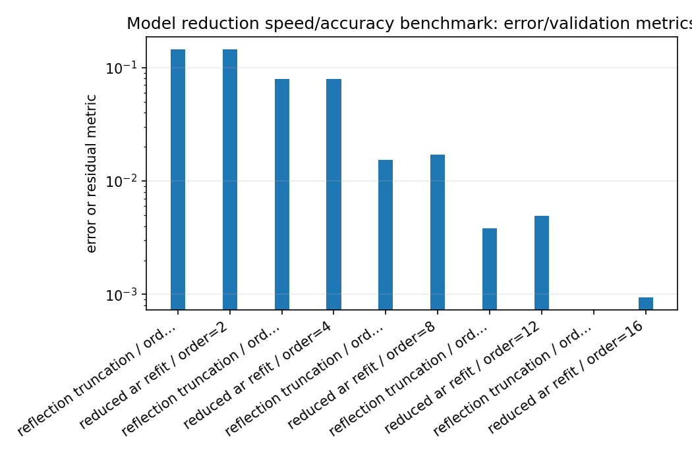
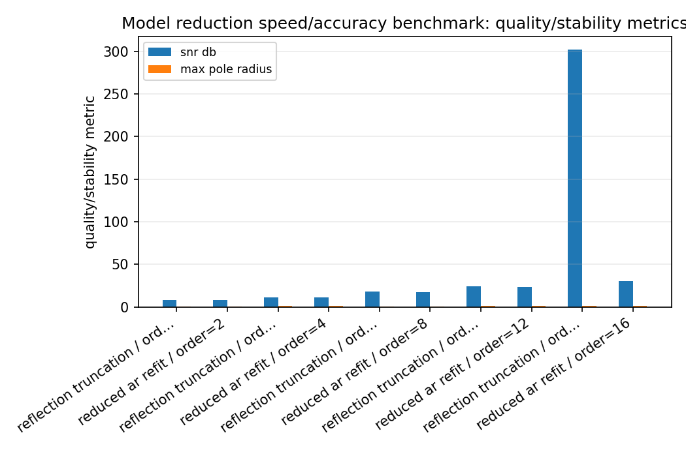
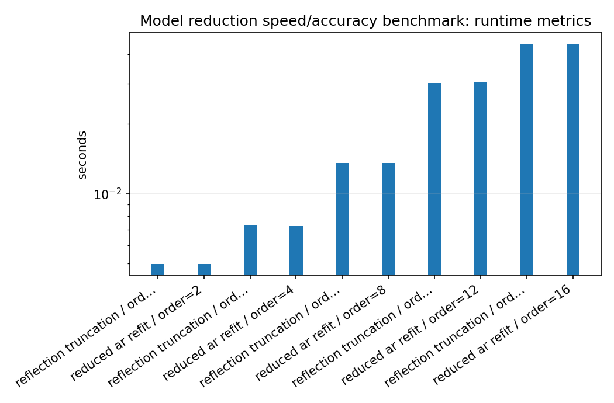
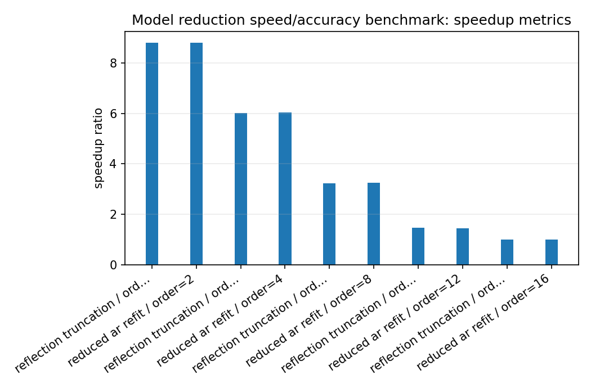

Model reduction speed/accuracy benchmark¶
Tutorial goal
Reduce a full-order all-pole model and measure speed, error, SNR, and pole radius.
Note
New to the terminology? See the lattice DSP concept map and the causality/data-use guide for how online, offline, block, and MIMO examples should be read.
Context¶
Model reduction is a tradeoff: lower order is cheaper, but it may no longer match the original response. This benchmark is intentionally a stable baseline, not a full Nehari/AAK/Hankel-norm reducer. The lattice parameterization makes simple reflection truncation useful because it preserves scalar stability, while the theory documentation explains how Hankel-operator diagnostics connect to SISO reduction quality.
Key idea and equations¶
The benchmark reports relative MSE and SNR,
How to read the result¶
Look for the smallest order whose SNR and relative MSE are acceptable while keeping max pole radius below one. Treat this as a stable baseline, not as a Hankel/Nehari/AAK optimality claim.
Run command¶
python benchmarks/model_reduction_benchmark.py --full-order 16 --orders 2 4 8 12 16 --channels 32 --samples 20000 --repeats 3 --output docs/benchmarks/generated/_artifacts/model_reduction/model-reduction.json
Run status¶
Return code: 0
Visual and data readout¶
When the benchmark gallery is built with results, this page embeds PNG summaries generated from the same JSON/CSV artifacts. The raw data stay available below as downloads so exact numbers remain reproducible without making the public page read like console output.
Figures¶
{kind=link}

model_reduction_error_summary.png¶
{kind=link}

model_reduction_quality_summary.png¶
{kind=link}

model_reduction_runtime_summary.png¶
{kind=link}

model_reduction_speedup_summary.png¶
Generated data files¶
Source code¶
1from __future__ import annotations
2
3import argparse
4import json
5import math
6import platform
7import statistics
8import time
9from pathlib import Path
10
11import numpy as np
12import lattice_dsp as ld
13
14
15def median_time(fn, repeats: int):
16 times = []
17 result = None
18 for _ in range(repeats):
19 t0 = time.perf_counter()
20 result = fn()
21 times.append(time.perf_counter() - t0)
22 return statistics.median(times), result
23
24
25def pole_radius(reflection):
26 if len(reflection) == 0:
27 return 0.0
28 a = np.asarray(ld.reflection_to_denominator(reflection.tolist()), dtype=float)
29 roots = np.roots(a)
30 return float(np.max(np.abs(roots))) if roots.size else 0.0
31
32
33def snr_db(reference, estimate):
34 err = reference - estimate
35 p_ref = float(np.mean(reference * reference))
36 p_err = float(np.mean(err * err))
37 return 10.0 * math.log10((p_ref + 1e-30) / (p_err + 1e-30))
38
39
40def process_batch(reflection, x):
41 numerator = [1.0] + [0.0] * len(reflection)
42 return ld.process_batch(reflection.tolist(), numerator, x)
43
44
45def main():
46 parser = argparse.ArgumentParser()
47 parser.add_argument("--full-order", type=int, default=16)
48 parser.add_argument("--orders", type=int, nargs="+", default=[2, 4, 6, 8, 12, 16])
49 parser.add_argument("--channels", type=int, default=64)
50 parser.add_argument("--samples", type=int, default=50000)
51 parser.add_argument("--repeats", type=int, default=5)
52 parser.add_argument("--seed", type=int, default=123)
53 parser.add_argument("--output", default="reports/model-reduction-results.json")
54 args = parser.parse_args()
55
56 rng = np.random.default_rng(args.seed)
57
58 # Stable high-order all-pole model via reflection coefficients.
59 # Magnitudes decay with order so lower-order reductions have a fair chance.
60 decay = np.exp(-np.arange(args.full_order) / 5.0)
61 full_reflection = 0.65 * decay * rng.uniform(-1.0, 1.0, size=args.full_order)
62
63 x = rng.normal(size=(args.channels, args.samples)).astype(np.float64)
64
65 full_time, y_full = median_time(
66 lambda: process_batch(full_reflection, x),
67 args.repeats,
68 )
69
70 rows = []
71
72 for order in args.orders:
73 if order > args.full_order:
74 continue
75
76 # Method 1: stable lattice truncation.
77 # Keep the first k reflection coefficients.
78 trunc_reflection = full_reflection[:order].copy()
79
80 trunc_time, y_trunc = median_time(
81 lambda r=trunc_reflection: process_batch(r, x),
82 args.repeats,
83 )
84
85 rows.append(
86 {
87 "method": "reflection_truncation",
88 "order": order,
89 "median_s": trunc_time,
90 "speedup_vs_full": full_time / trunc_time,
91 "rel_mse": float(np.mean((y_full - y_trunc) ** 2) / (np.mean(y_full ** 2) + 1e-30)),
92 "snr_db": snr_db(y_full, y_trunc),
93 "max_pole_radius": pole_radius(trunc_reflection),
94 }
95 )
96
97 # Method 2: reduced AR refit.
98 # Estimate a reduced all-pole model from the full model's first channel.
99 # This is often a better reduced model than simple truncation.
100 if order > 0:
101 r = ld.autocorrelation(y_full[0], order)
102 fit_reflection = np.asarray(
103 ld.levinson_durbin_reflection(r, order),
104 dtype=float,
105 )
106 else:
107 fit_reflection = np.asarray([], dtype=float)
108
109 fit_time, y_fit = median_time(
110 lambda r=fit_reflection: process_batch(r, x),
111 args.repeats,
112 )
113
114 rows.append(
115 {
116 "method": "reduced_ar_refit",
117 "order": order,
118 "median_s": fit_time,
119 "speedup_vs_full": full_time / fit_time,
120 "rel_mse": float(np.mean((y_full - y_fit) ** 2) / (np.mean(y_full ** 2) + 1e-30)),
121 "snr_db": snr_db(y_full, y_fit),
122 "max_pole_radius": pole_radius(fit_reflection),
123 }
124 )
125
126 result = {
127 "metadata": {
128 "python": platform.python_version(),
129 "platform": platform.platform(),
130 "has_openmp": bool(ld.HAS_OPENMP),
131 "full_order": args.full_order,
132 "channels": args.channels,
133 "samples": args.samples,
134 "repeats": args.repeats,
135 "seed": args.seed,
136 "full_median_s": full_time,
137 "full_max_pole_radius": pole_radius(full_reflection),
138 },
139 "rows": rows,
140 }
141
142 Path(args.output).parent.mkdir(parents=True, exist_ok=True)
143 Path(args.output).write_text(json.dumps(result, indent=2))
144
145 print(json.dumps(result["metadata"], indent=2))
146 print()
147 print(f"{'method':24s} {'order':>5s} {'median_s':>10s} {'speedup':>9s} {'rel_mse':>12s} {'snr_db':>9s} {'pole_r':>8s}")
148 print("-" * 88)
149 for row in sorted(rows, key=lambda r: (r["method"], r["order"])):
150 print(
151 f"{row['method']:24s} "
152 f"{row['order']:5d} "
153 f"{row['median_s']:10.6f} "
154 f"{row['speedup_vs_full']:9.2f} "
155 f"{row['rel_mse']:12.3e} "
156 f"{row['snr_db']:9.2f} "
157 f"{row['max_pole_radius']:8.4f}"
158 )
159
160 print()
161 print(f"Wrote {args.output}")
162
163
164if __name__ == "__main__":
165 main()